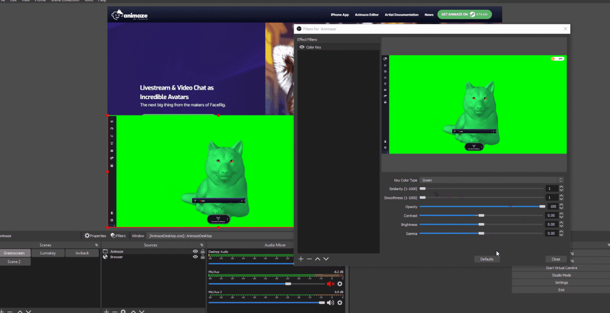

Animaze Desktop: How can I get my green avatar to work with the green screen?
If your avatar is green and you’re facing difficulties with putting it on a green screen, you can play around with Similarity and Smoothness in the Color Key Filter from OBS.

You can find more on OBS sources and tools here and here
Additionally, you can also change the backdrop color in Animaze to another distinguishable color. Go to Backgrounds gallery, click on the Green screen, this will open the Customizations and activate Solid Color option.